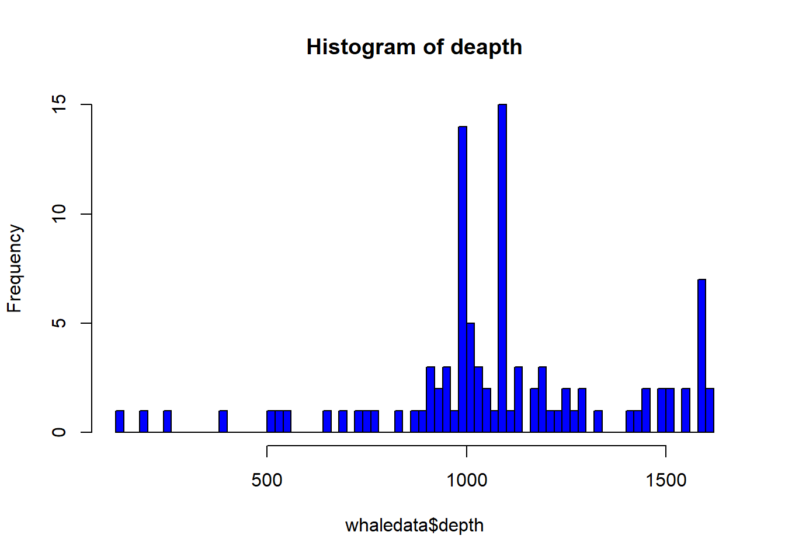

c(1:10)*10 == seq(10, 100, 10)
rep(10,10) == seq(100,10,-10)Question 1
Continuation of question 3
Extract rows from the whale data data frame based on the following criteria:
depths greater than 1200 m gradient steeper than 200 degrees water.
noise level of ‘low’ water.noise level of ‘high’ in the month of ‘May’.
month of ‘October’, water noise level of ‘low’ and gradient greater than.
the median value of gradient (132) all observations from between.
latitudes 60.0 and 61.0 and longitudes -6.0 and -4.0.
all rows that do not have a water noise level of medium.
depths greater than 1500 m and with a greater number of whales spotted than average.
Question 2
As part of our research we want to check what are the ten deepest depths that whales have reached.
- Create a new data frame named “TOP10” that contains only the 10 deepest depths.
- From “TOP10” delete the gradient and noise columns
Question 3
As part of our research on whales, we want to create a map with the location of the whales and their noise level.
Create a new data frame named noise_location that contains latitude, longitude, and water.noise columns from whale data.
Rename water.noise to noise_level
Order the data frame by noise_level
Add a column of the average latitude value
Add a column of the average longitude value
save the noise_location data frame in csv format to your local folder.
Question 4
try to guess what you will get before running the following code:
Question 5
Save your entire work space, naming it the third_lesson, afterwards upload the third_lesson file back into R.
Bonus question! That is for those who want to go further beyond!
Create a histogram of the depth, the histogram should be blue and with appropriate title, add breaks as the length of the depth vector.
It should look like this: ::: {.cell}
:::
